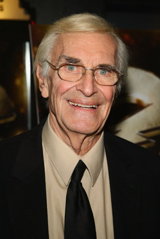
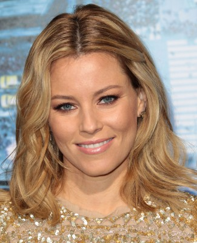
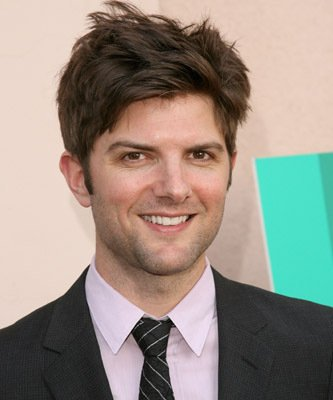

#11869 Immer noch Liebe!
Alternativ: Lovely, Still (Englischer Titel)

 IMDB-Wertung: 7.1 / 10
IMDB-Wertung: 7.1 / 10  Metascore: 57
Metascore: 57 
Wie jedes Jahr in der Vorweihnachtszeit fühlt sich der alleinstehende Robert Malone einsam und vermisst die Liebe in seinem Leben. Eines Abends steht plötzlich eine fremde ältere Dame vor seiner Haustür. Was wie eine merkwürdige Zufallsbegegnung beginnt, entwickelt sich zu einer romantischen Liebesgeschichte zweier älterer Menschen, die uns auf eine wundervolle und bewegende Reise mit unerwartetem Ausgang mitnimmt...
Jahr: 2008
Dauer: 88 Minuten
FSK: 6
Land: USA Studio: Monterey MediaTonspuren:
Untertitel:
Auflösung: 1080p (1920x1080) Größe: 4085 MB
Genre: Drama, Liebe
Regisseur: Nicholas Fackler
Drehbuch: Nicholas Fackler, Tim Kasher
Soundtrack: Mike Mogis, Nate Walcott
Darsteller:
-  Martin Landau als Robert Malone
 Ellen Burstyn als Mary Malone
Ellen Burstyn als Mary Malone-  Elizabeth Banks als Alex Malone
-  Adam Scott als Mike Malone
- Har Mar Superstar als Peter
- Kali Cook als Cute Girl
- Scott Beehner als Co-Worker #4
- Leo Fitzpatrick als Pharmacist
- Mark Booker als Harold
- Candice Rose als Young Mary (uncredited)
- Chris Wiig als Co-Worker #1
- M. Michele Phillips als Co-Worker #2
- Tina Dixon als Post Woman
- Mary Douglass als Co-Worker #3
- Todd Fink als Fancy Waiter
- Ross Brockley als Grumpy Carriage Driver
- Alex Curbeam als Damien Montgonmery
- Michael Leach Jr. als Sled Kid #2
- Nick Hernandez als Sled Kid #3
- Judith Kathryn Hart als Jacky
- Jules Blight als Lisa
- Mark Kresl als Rufus
- Zoey Newman als Michelle
- James Devney als Buck
- Melissa Jarecke als Party Woiman
- Sean O'Connell als Young Mike
- Randi-Shane Knox als Young Alex
- Chuck Martens als Extra
- Brett Comstock als Girl in Cafe (uncredited)
- Andrea Marzullo als Ghost (uncredited)
Datei: X:\NEU\Immer noch Liebe! (2008, FSK6, 1920x1080).mkv seit 02.10.2019
 Es gibt insgesamt 187 Filme in der Gruppe 'NEU'
Es gibt insgesamt 187 Filme in der Gruppe 'NEU'